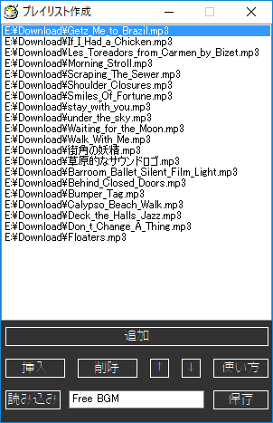
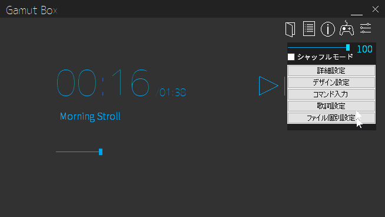
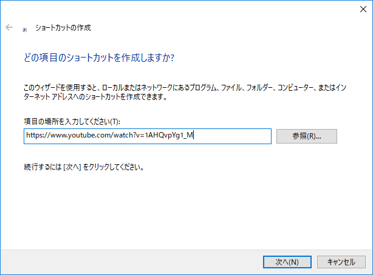

Q. どの拡張子のファイルが扱えますか？
A. Gamut Boxではmp3, wav, wma, asf, midiに対応しております。
また、Gamut Box microではmp3, wav, wma, asfと、インターネット上の音声の再生に対応しています。
ただし、ファイルによっては再生できないものもございますのでご了承ください。
Q. 歌詞ファイルの形式は何ですか？また、他のアプリとの互換性はありますか？
A. 歌詞ファイルの形式はlrc形式で、Walkmanの歌詞ファイルに対応しております。
歌詞ファイルはGamut Box上で作成することができます。
ただし、歌詞作成機能はGamut Box microには未搭載です。
※"ウォークマン", "WALKMAN", "WALKMAN"ロゴは、ソニー株式会社の登録商標です。
Q. 背景画像の形式は何に対応していますか？
※Gamut Boxのみ
A. 背景画像はjpg, jpeg, png, bmp, gif, ico, curに対応しております。
背景画像はウィンドウの大きさに合わせて拡大・縮小されます。
背景画像の設定は「デザイン設定」にあります。
Q. 動画ファイルは再生できますか？
A. 動画ファイルの再生には対応しておりません。
Q. プレイリストはどのように作成しますか？
※Gamut Boxのみ
A. Gamut Boxでは、プレイリストボタンを押すとプレイリスト作成ウィンドウが開きます。
リスト形式で曲の追加・挿入・削除ができます。

Q. 音量の調節はどこから出来ますか？
※Gamut Boxのみ
A. 設定ボタンを押すと、音量調節バーが表示されます。

Q. テーマは何種類ありますか？
※Gamut Boxのみ
A.テーマは5個用意してあります。
Normal : 標準のテーマ。背景色やシークバーの色などは「デザイン設定」で設定された色が反映されます。
Space Travel : 背景は宇宙で、シークバーは星と星の間を征く宇宙船になります。
Sea with Swimmer : 背景は海で、シークバーはクロールで泳いでいる人になります。
Sea with Yacht : 背景は海で、シークバーはヨットになります。
Snow : 背景は雪で、シークバーは雪だるまを作っている人になります。
Q. インターネットからの再生にはどのように操作すればいいですか？
※Gamut Box microのみ
A. インターネットショートカットを開くことでインターネットからの再生を行うことができます。
インターネットショートカットは、Windowsのエクスプローラー上で右クリックし、
新規作成(X) > ショートカット(S)を開き、項目の場所を入力してください(T)という入力欄に
URLを入力することで作成できます。

Q. 改造・再配布はできますか？
A. Gamut BoxおよびGamut Box microはオープンソースですので、
ご自由に改造なさってください。再配布も可能ですが、
改変せずにそのまま再配布することはできませんのでご注意ください。